一、开篇：课程缘起与分析框架
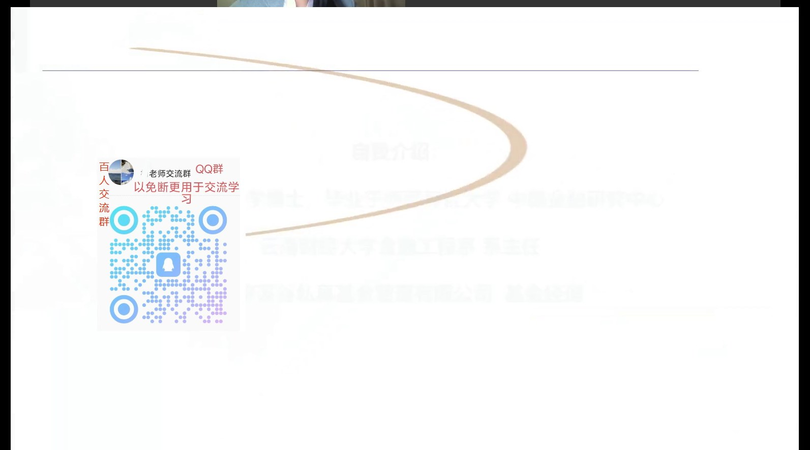
主讲人陈晓丹，博士毕业于西南财经大学中国金融研究中心，现任云南财经大学金融工程系主任，同时是北京西谷私募基金管理有限公司（简称"西谷资产"）基金经理，兼具扎实理论与实战经验。
设立本课的初衷：很多投资者炒了一辈子股票，却"连市场的门朝哪开都不知道"，只知炒高找低、满仓进出，对A股的底层逻辑、与西方市场起步和发展路径的差异缺乏认知。单一时点很难判断方向，必须先把历史脉络摸清。
本课围绕三个方面展开：
① 2009-2026年市场全景扫描——从规模、结构、生态的进化切入；② 关键牛熊周期深度复盘；③ 2026年及未来展望。
二、规模跃迁：总市值与上市公司数量
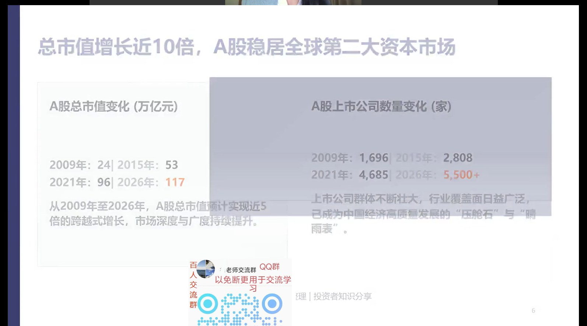
2.1 总市值：17年约5倍跨越
- 2007年6124点牛市时，A股总市值曾达约35万亿元；2008年金融危机后回落
- 2009年底约24万亿 → 2015年约53万亿（翻倍）→ 2021年约96万亿（再翻倍）→ 2026年5月约117万亿（2025年底曾达约124万亿）
- 2009至2026年总市值接近5倍的跨越式增长，市场广度与深度持续提升
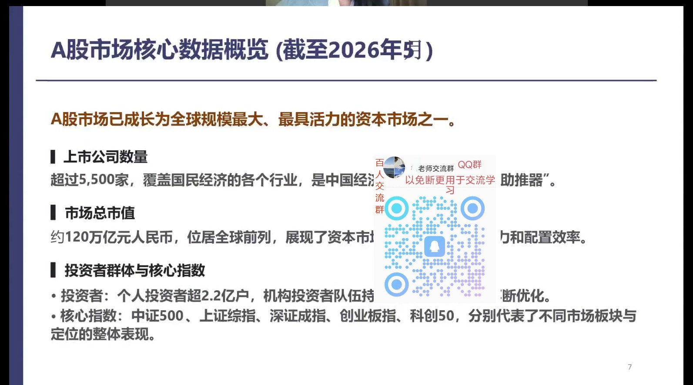
2.2 上市公司数量与核心数据（截至2026年5月）
- 上市公司从2009年的1696家增至2026年的5500多家
- 总市值约120万亿元，位居全球第二；覆盖国民经济各行业，是中国经济的晴雨表与助推器
- 个人投资者达2.2亿户（约每7人就有1个股民），机构投资者持续扩大
- 核心指数：上证综指、深证成指、中证500、科创板与创业板指数，分别代表不同板块定位
数量扩张也抬高了投资难度：2009年仅1000多家公司，看完报表并不难；如今5500家公司，仅凭人力在年报季通读全部财报已不可能。
三、全球地位：A股排位与中美头部效应
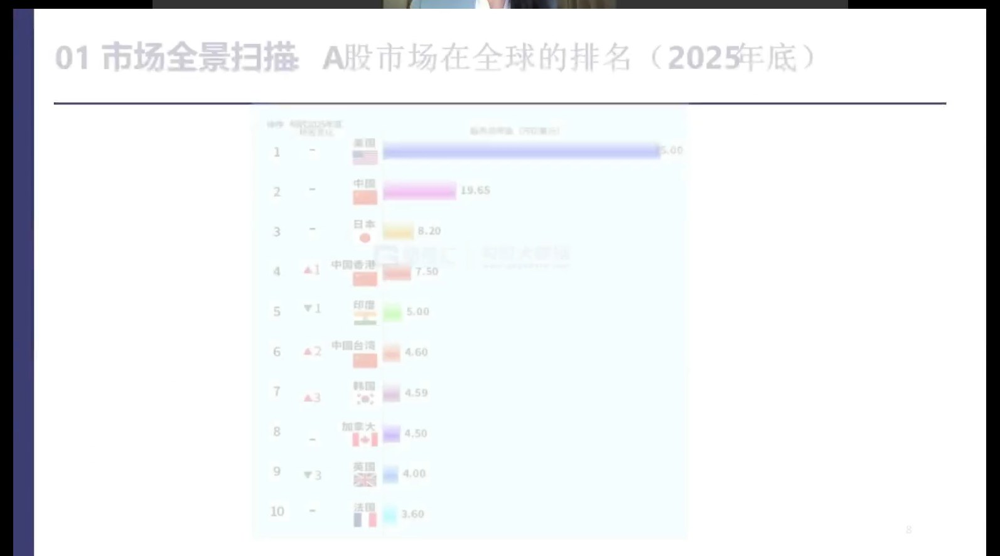
3.1 全球主要市场排位（2025年底，万亿美元）
- 美国约75（第一）、中国A股约19.65（第二）、日本约8.20（第三）、香港约7.50（第四）、印度约5.00（第五）、中国台湾约4.60（第六）
- 若把A股、港股、台股等大中华市场全部相加，总市值约能达到美股的不到一半
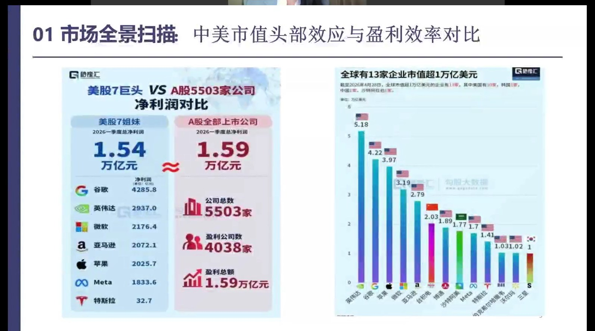
3.2 中美头部效应：七巨头 ≈ A股全部
美股"七巨头"（谷歌、英伟达等）2026年一季度净利润合计约1.54万亿美元；A股全部5500多家公司净利润合计约1.59万亿美元——5500家A股的利润总和，仅与美国前七大企业大体持平。
- 美国不含OTC（柜台交易）市场约有5800家上市公司，含OTC约7000多家；A股约5500家——从上市公司数量看，A股已基本达到阶段性目标，未来IPO数量不会再像过去那样高速扩张
- 全球"万亿美元俱乐部"共13家公司，其中仅台积电一家算中国企业，另有沙特阿美、三星，其余多为美国公司
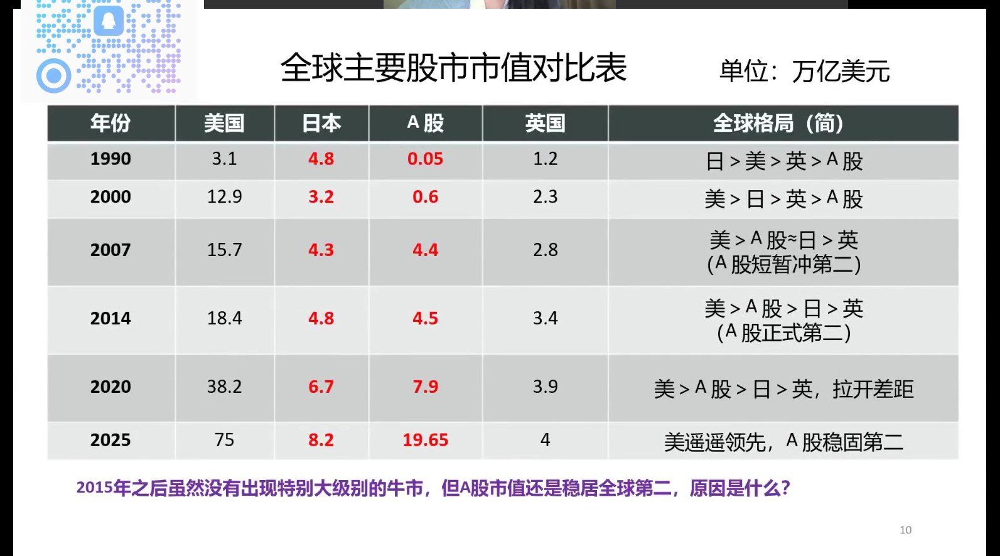
3.3 历史对比：日本失去的30年
- 1990年日本股市总市值约4.8万亿美元、曾在美国（约3.1万亿）之上；广场协议后日元升值、资产泡沫，叠加政策失当、股市楼市崩盘，日本经历"失去的30年"
- 日本总市值2000年退回约3.2万亿，直到2014年仍与1990年基本持平，2025年才回到约8.2万亿
- A股2007年曾短暂超过日本，2014年底正式超越日本成为全球第二；2015年后虽无大级别牛市，市值却快速增长并稳居第二，主因是持续建设融资端（公司数量与再融资增长）
四、融资、分红与A股的宏观角色
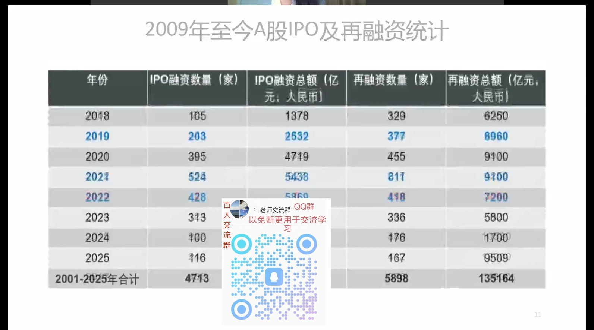
4.1 IPO与再融资规模
- 2009年IPO约98家、融资约1879亿元；2010年创业板开板，IPO骤增至348家
- 2013年市场低迷、近乎失去融资功能，IPO仅2家，但再融资仍是"暗线"；2019年科创板开板、2021年北交所成立，IPO数量再度大涨
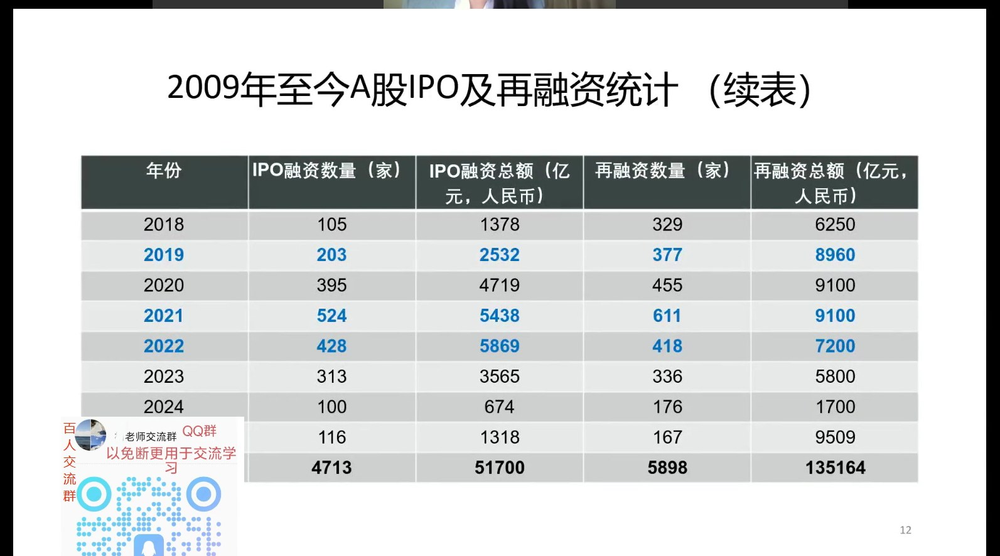
2001-2025年合计：IPO约4700多家、融资约5.17万亿元；再融资约5898家、规模约13.52万亿元（IPO是首次公开发行，再融资是已上市公司再次募资）。
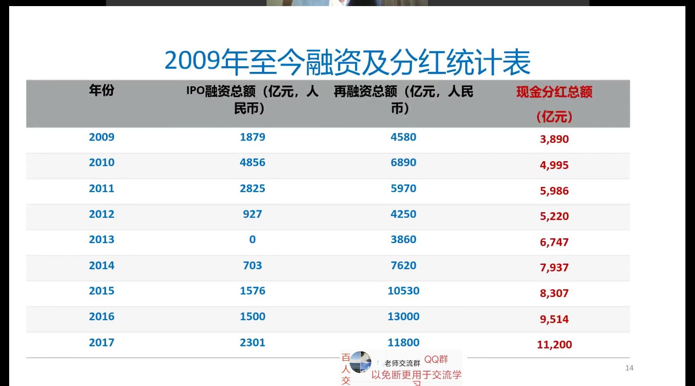
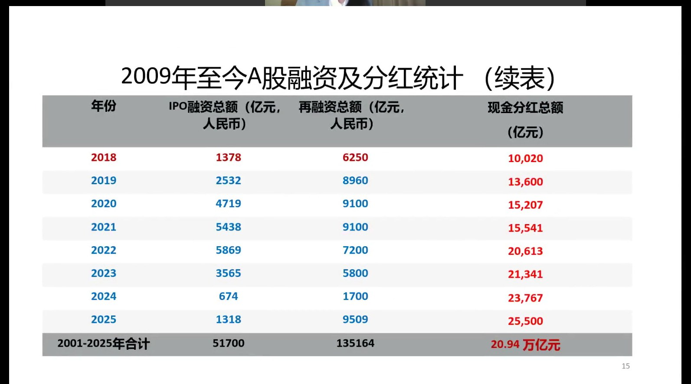
4.2 现金分红：分红已反超融资
- 2009年现金分红约3890亿元，已是当年IPO融资额（约1879亿）的约两倍
- 2018年 IPO+再融资合计募资已小于当年现金分红；2025年现金分红约2.55万亿元，而IPO约1318亿、再融资约9509亿
- 2001-2025年现金分红合计约20.94万亿元——A股分红已超过从市场募走的资金，"抽血"与"注水"的关系正在逆转
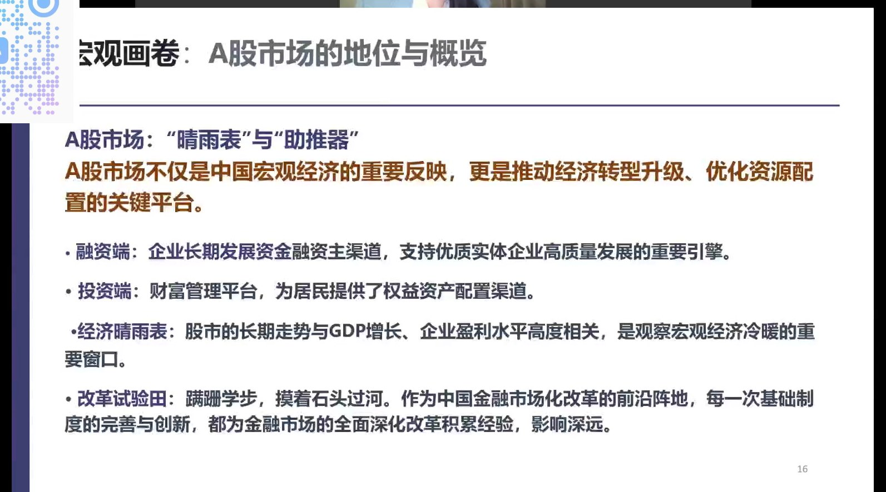
4.3 A股的宏观角色：四个定位
- 晴雨表与助推器：反映宏观经济，更是推动经济转型、优化资源配置的关键平台；上市公司是各行业最大、最好、达到一定条件的企业
- 融资端：企业获取长期发展资金的主要渠道（股权资金不可退股、只能转让，是长期资本），支持优质实体企业高质量发展
- 投资端：为居民提供权益资产配置的主要渠道，流动性好（今天买入、明天可卖出），市场因此享有流动性溢价
- 改革试验田：蹒跚学步、摸着石头过河。如1996年股指年涨345%，监管连发"十二道金牌"降温，体现早期市场的探索属性
五、结构蝶变：从传统行业到新经济
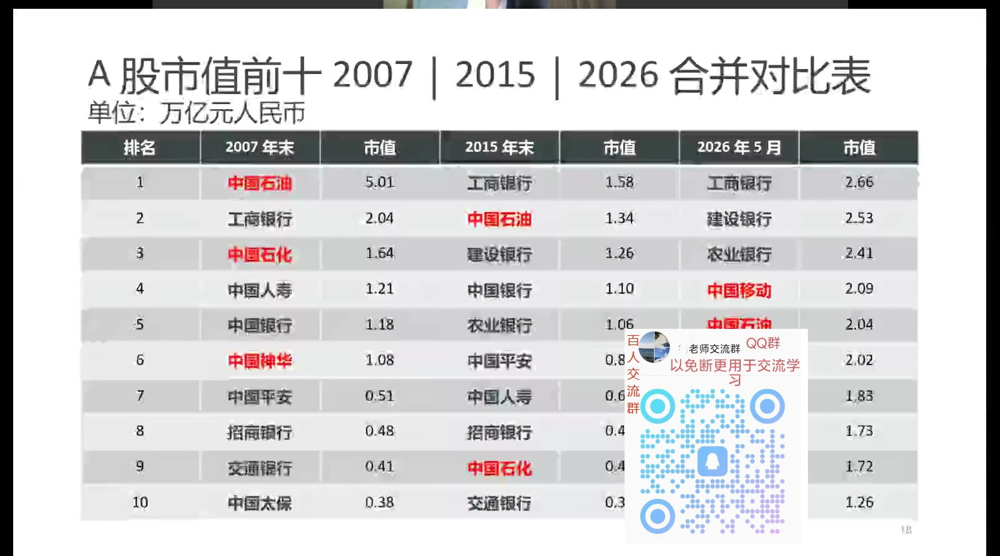
5.1 市值前十公司的三次变迁
- 2007年：能源金融主导，仅中石油、中石化、中国神华3家非金融企业，其余全是金融；中石油一家市值碾压全场
- 2015年：金融接棒，除中石油、中石化外，多为工商、农行、中行、建行、交行等国有大行及几家保险公司
- 2026年：结构多元化，银行仅剩4家，中国移动、中石油、宁德时代、中海油、茅台、工业富联等新能源、消费、科技、通信公司进入前十
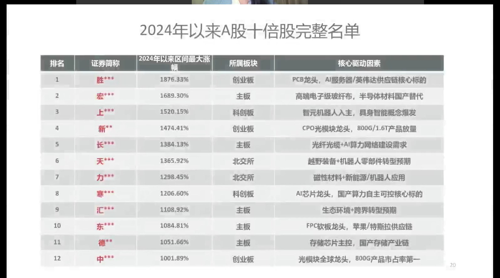
5.2 2024年以来的12只十倍股
- 2024年牛市以来共出现12只十倍股，整体涨幅最低约10倍、最高约18倍，集中于高端制造、PCB、AI服务器方向
- 代表：胜宏科技约1876%、宏和科技约1689%、上纬新材约1520%、新易盛约1474%、长飞光纤约1384%、寒武纪约1206%、中际旭创约1001%；其中北交所小盘股、并购重组标的多为机器人概念
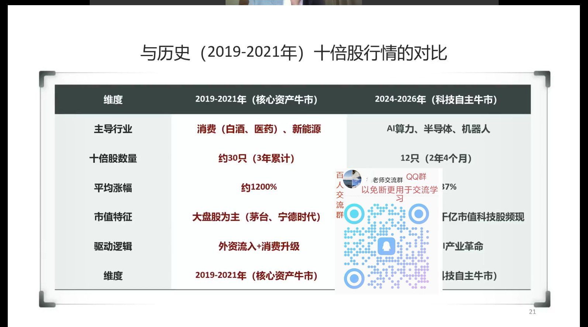
5.3 与2019-2021年十倍股对比
2019-2021年：约30只十倍股、3年平均涨幅约1200%，主导是消费（"喝酒吃药"）与新能源，以大盘核心资产为主，可称"核心资产牛"。
2024-2026年：12只、仅2年4个月、平均涨幅约1300%，集中在AI算力、半导体、机器人，以中小盘为主，可称"科技自主牛"。
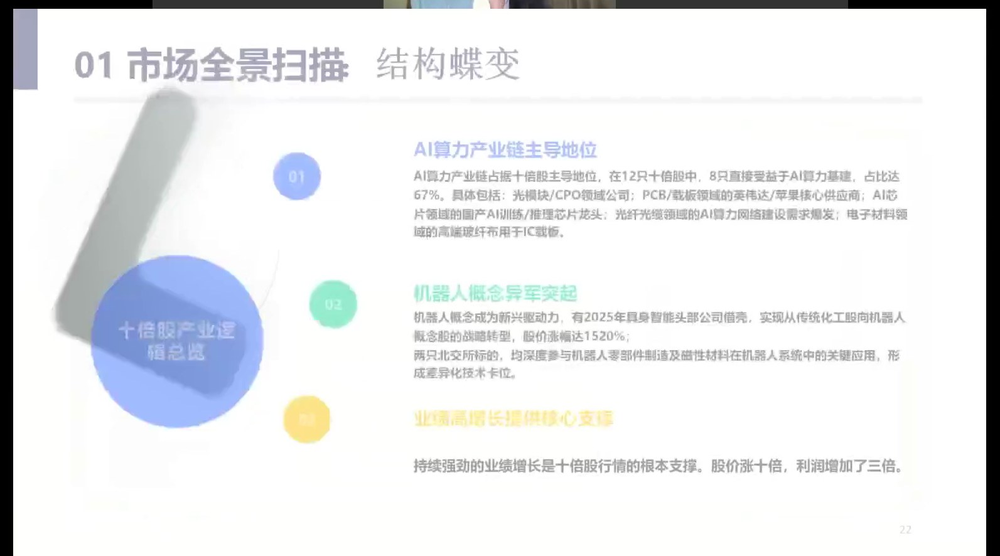
5.4 产业逻辑：AI算力主导、有业绩支撑
- 12只十倍股中约8只直接受益AI（占比约67%），另有机器人主线；这些公司利润普遍增长约3-4倍，对10倍股价形成支撑——没有业绩的标的很快"见光死"，而多数公司被业绩证实
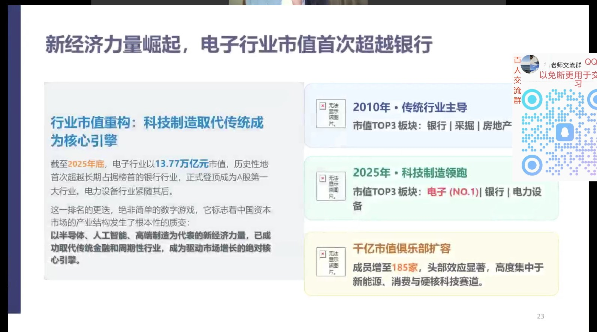
5.5 新经济崛起：电子首超银行
- 截至2025年底，电子行业以约13.77万亿元市值，历史性首次超越长期霸榜的银行业，成为A股第一大行业
- 2010年市值TOP3行业为银行、采掘、房地产；2025年变为电子、银行、电力设备
- 千亿市值俱乐部增至约185家，高度集中于新能源、消费与硬核科技，头部效应开始显著
六、多层次资本市场：四大交易所格局
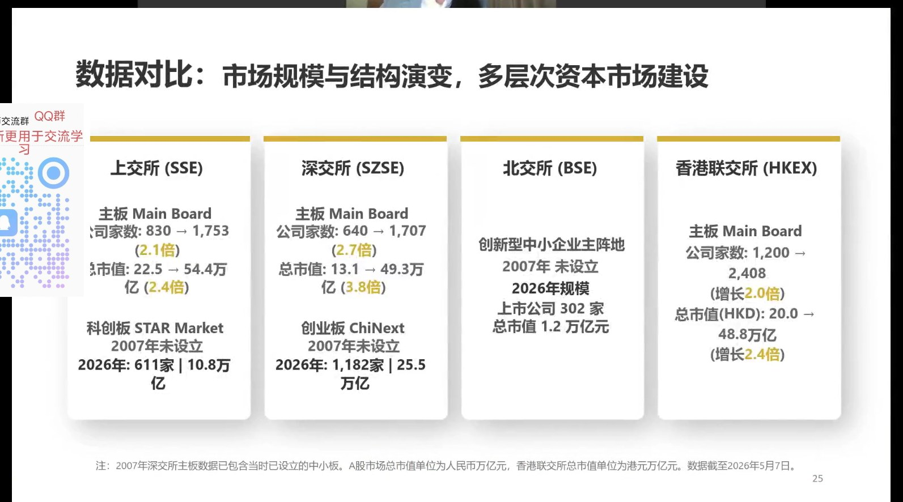
6.1 各板块规模变化
- 上交所（主板+科创板）公司家数与总市值均翻了两倍多；深交所（主板由原主板与中小板合并+创业板）家数约涨2.7倍、市值约涨3.8倍
- 创业板要求较高业绩增长，定位高增长板块；北交所服务专精特新"小巨人"，300多家公司、总市值约1.2万亿；香港联交所市值与家数也约翻两倍
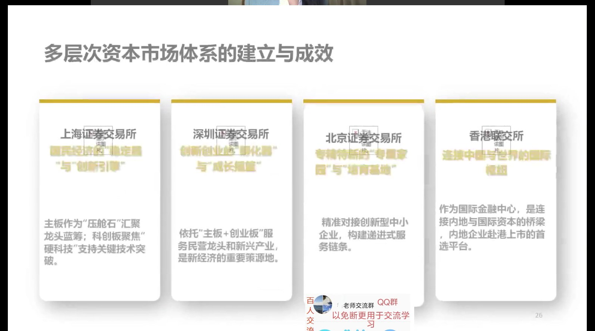
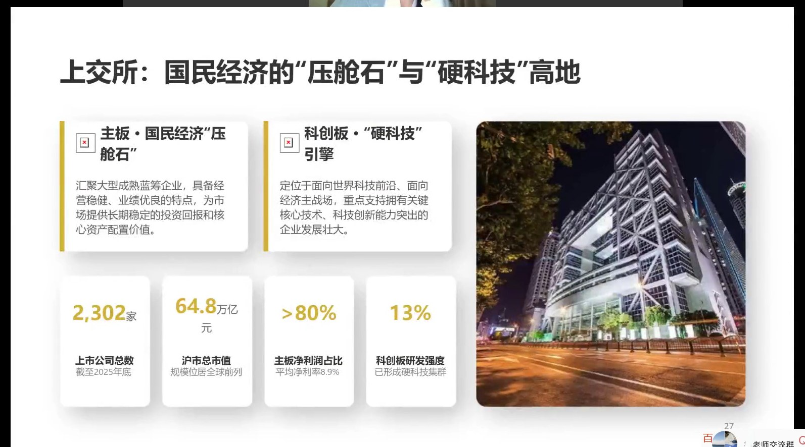
6.2 上交所：主板"压舱石"、科创板"硬科技"
- 截至2025年底约2302家上市公司，沪市总市值约64.8万亿元
- 主板汇聚大型成熟蓝筹，净利润占比超80%（平均净利率约8.9%）；科创板定位硬科技前沿，研发强度约13%，已形成硬科技集群
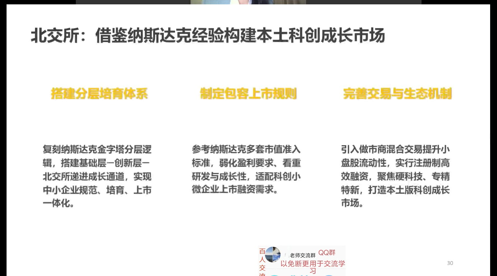
6.3 北交所：借鉴纳斯达克、本土特色
- 搭建分层培育体系：复刻纳斯达克金字塔分层逻辑，形成基础层—创新层—北交所递进成长通道，实现中小企业规范、培育、上市一体化
- 包容上市规则：参考多套市值准入标准，弱化盈利、看重研发与成长性；完善交易与生态：引入做市商混合交易提升小盘股流动性，聚焦硬科技、专精特新
本视频中PPT从上交所（p27）直接切换到北交所（p30），并未展示深交所独立页，属课件本身的取舍，不是遗漏。
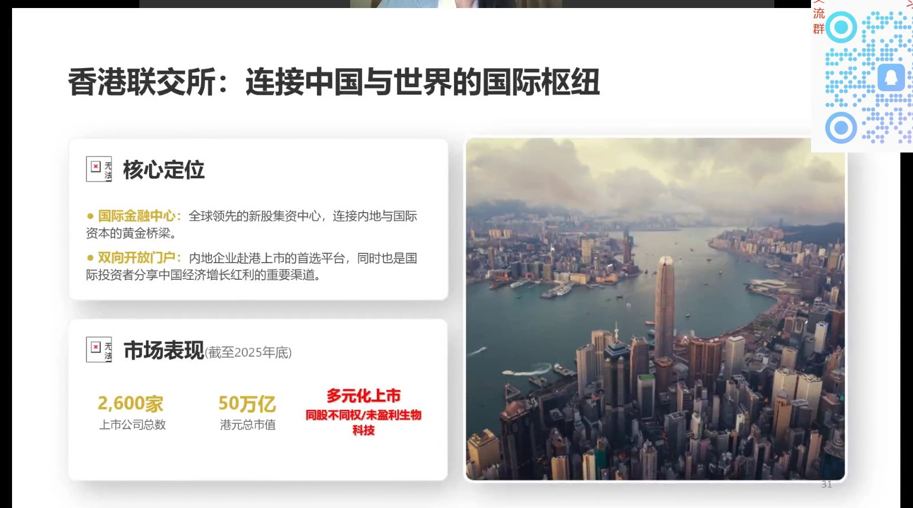
6.4 香港联交所：国际化、多元化平台
- 香港是西方资本进入中国的"第一站"，约2600家公司、约50万亿港元；国际企业不能在A股上市，国际投资者也需通过QFII认证投A股，香港因此成为关键门户
- 机制包容：接纳同股不同权、未盈利生物科技公司，也为泡泡玛特、酒企（如珍酒李渡）等A股难上的公司提供渠道
- A+H股公司约182家，港股通可投公司约569家，让中国与世界双向连通（如Prada即在香港上市）
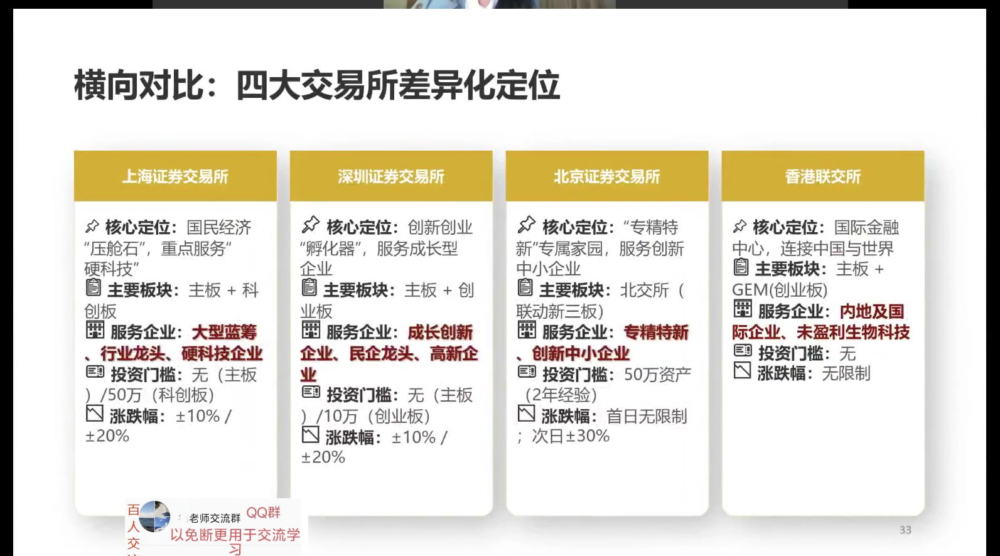
6.5 四大交易所差异化定位
上交所主板压舱石、科创板硬科技；深交所主板与创业板服务成长与创新；北交所精准对接新三板、服务专精特新；香港联交所定位国际枢纽。四者错位互补，共同构成多层次资本市场。当前科创板IPO已趋于"邀请制"，未来数量不会再"大跃进"。
七、广度深度与证券化率（巴菲特指标）
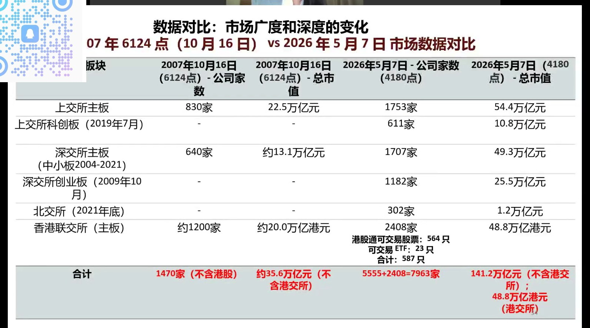
7.1 2007 vs 2026：广度深度巨变
- 2007年10月16日（6124点顶点）A股约1470家公司、总市值约35万亿（不含港股，港股通2014年才开通）
- 2026年5月A股约5000多家、港股约2400多家；内地投资者可交易公司合计约6000多家，A股约140万亿、港股约48万亿，合计约180-188万亿
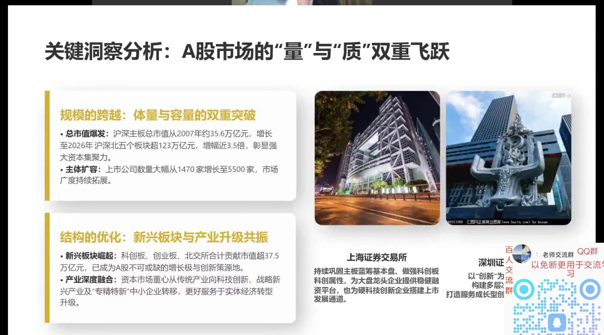
7.2 关键洞察：量与质双重飞跃
- 量：总市值爆发、主体扩容；质：科创板、创业板、北交所等新兴板块合计贡献市值近40万亿，产业深度融合
- 市场从"一盆水"变成"一浴缸水"：过去涨一倍所需资金不多，如今180多万亿的体量上涨需要巨量资金。监管清理配资、降温市场，本质是对市场的呵护——"一放就乱、一管就死"
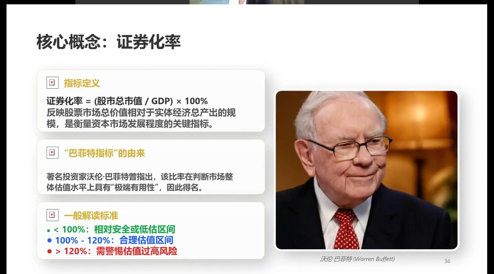
7.3 证券化率（巴菲特指标）
证券化率 = 股市总市值 ÷ GDP ×100%，衡量虚拟经济相对实体经济的规模，巴菲特认为其在判断整体估值上极端有用。
判读标准：<100% 安全/低估；100%-120% 合理；>120% 警惕/高估。
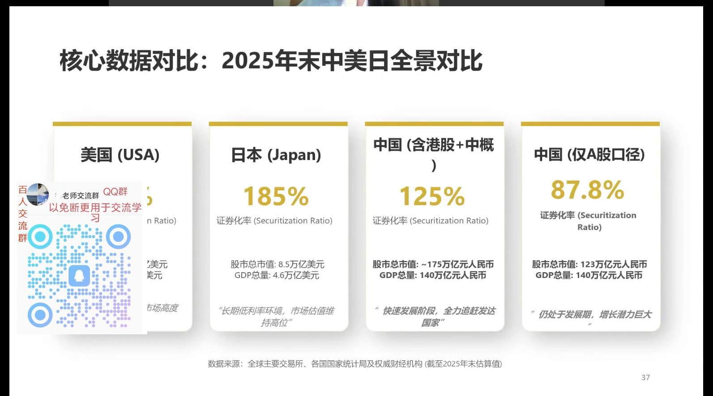
7.4 中美日对比（2025年）
- 美国约221%、日本约185%、中国含港股与中概约125%、仅A股口径约87.8%
- A股即使上涨一倍才约150%，仍低于当前日本水平；证券化率偏低的主因是分母GDP增长更快——意味着可承载的市值增长空间仍然很大
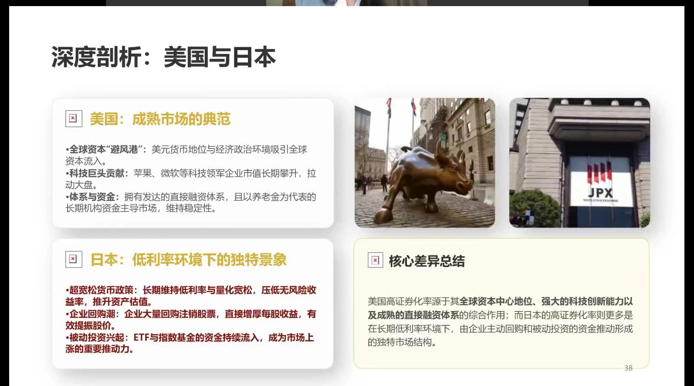
7.5 美日经验剖析
- 美国：全球资本避风港、科技巨头拉动、直接融资发达。企业早期靠PE/VC（如特斯拉长期获包容式投资），上市后靠民间资本，经济很大程度依赖资本市场
- 日本：超级宽松货币（低利率、量化宽松甚至负利率）；企业大量回购注销股票、增厚每股收益；被动投资（ETF/指数基金）兴起，成为上涨主要动力。当前中国低利率环境与日本当年高度相似
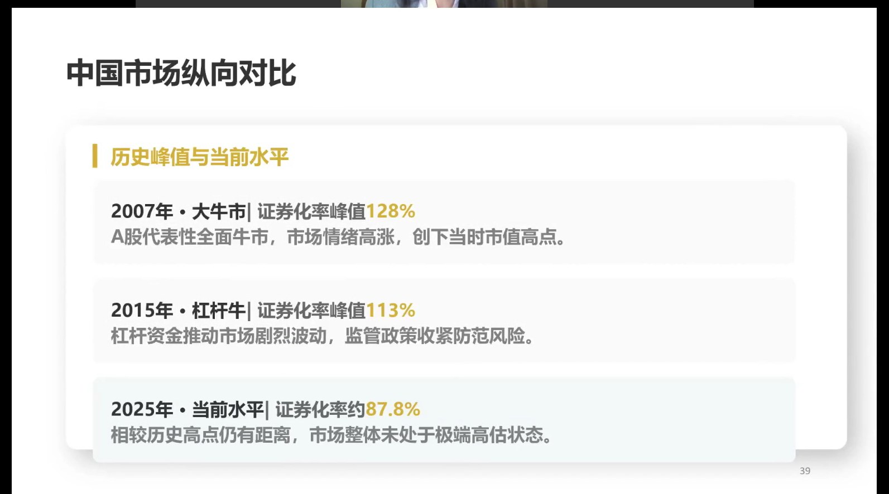
7.6 中国证券化率纵向对比
- 2007年牛市峰值约128%、2015年峰值约113%、2025年当前约87.8%——历次牛市峰值证券化率反而下移，主因是GDP分母持续变大
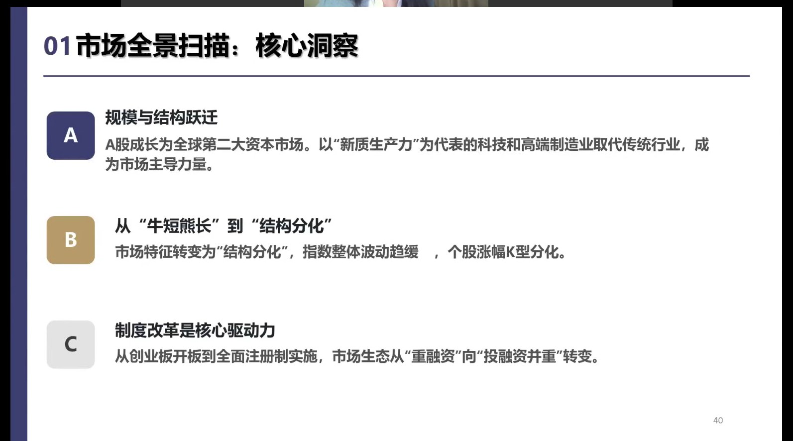
7.7 全景扫描核心洞察
① 规模结构跃升、成为全球第二大市场，新质生产力代表的科技与高端制造取代传统行业成为主导——"做股票做的是时代特征"，非时代主线但能长期高分红的公司也可持有；
② 市场从"牛短熊长"变为"结构分化"，指数波动趋缓、个股呈K型分化（一腿向上、一腿向下），难再现全面普涨、消灭低价股；
③ 制度改革是核心驱动力，从创业板开板到全面注册制，生态从重融资转向投融资并重，投资者地位上升。
八、十七年牛熊周期总览
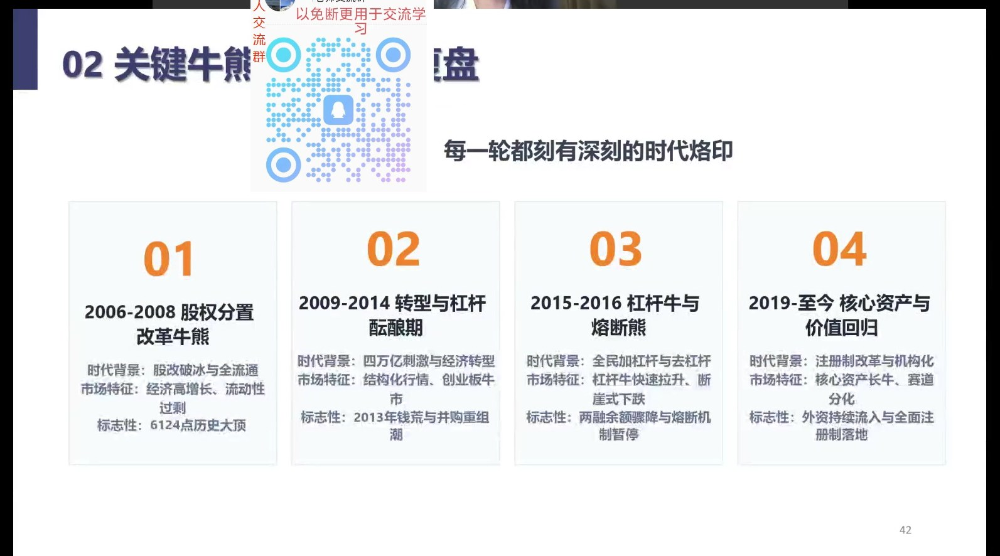
8.1 四轮大小牛熊
- 2006-2008年：股权分置改革+人民币升值，股改破冰、全流通，高增长与流动性过剩，最高6124点
- 2009-2014年：转型与杠杆，4万亿刺激与经济转型，结构化行情、创业板牛市，标志事件为2013年钱荒与并购重组浪潮
- 2015-2016年：杠杆牛与熔断，全民加杠杆又去杠杆，两融骤降、暴涨暴跌
- 2019年至今：核心资产与价值回归，中间经历2022-2023年熊市
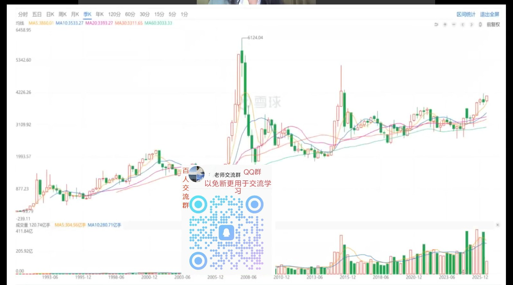
上证指数季K线（1990年以来）标注了历次牛市顶部；其中2013年创业板牛市在上证指数上几乎体现不出来。单独看创业板，2013年从585点涨至年末1571点、约3倍——当时创业板在市场眼中"又小又差"，如同今天看北交所。
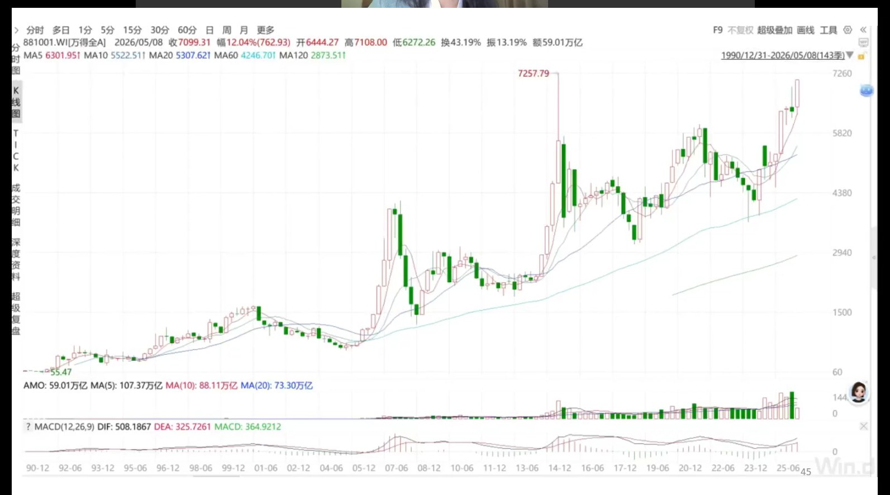
万得全A（及等权）指数比上证指数更能反映全貌。三次"国九条"（2004年、2014年、2024年）颁布后几个季度，市场均走出牛市——前两次引来大级别牛市，2024年第三次国九条以来，万得全A已逼近历史新高。
九、政策市与资金市的双重属性
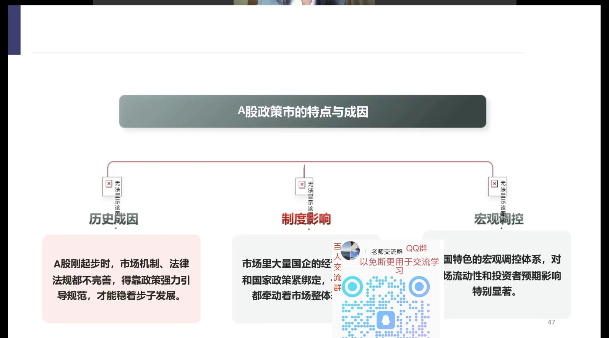
9.1 A股政策市的三大成因
- 历史成因：A股刚起步时市场机制、法律法规不完善，像对待新生儿一样先抱、再扶、最后才放手，须靠政策强力引导规范才能稳步发展（早期T+0与T+1、涨跌停板制度都几经反复）
- 制度影响：市场里大量国企的经济活动与国家政策紧密绑定，政策变化牵动市场整体
- 宏观调控：中国特色宏观调控体系对市场流动性和投资者预期影响特别显著
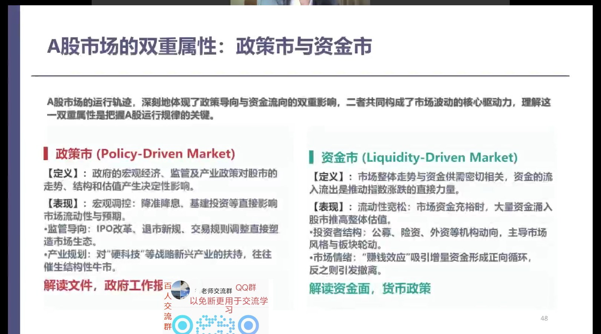
9.2 双重属性：政策市 + 资金市
- 政策市：大量研报解读政府工作报告，做A股不能不看政策
- 资金市：也有很多研报解读资金面与货币政策。如招商证券罗毅提出"M1定买卖"，研究M1增量与股市涨跌的关系，至今仍被券商持续跟踪、发挥
冷知识：上证指数起点是100点（1992年两年涨约15倍至1400多点，2005年前后的998点是大底）；深证成指起点是1000点。
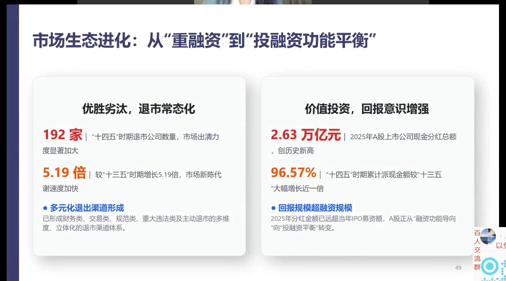
9.3 生态进化：从重融资到投融资并重
- "十四五"期间退市公司约192家，应退尽退、多元化退出渠道畅通；相比"十三五"退市数量大幅增加
- 2025年现金分红约2.63万亿元，"十四五"派现大幅增长（约+96.57%）；过去炒小炒烂、专做ST的策略在"应退尽退"下面临巨大风险（如*ST同达最终退市）
十、四轮牛熊分段复盘
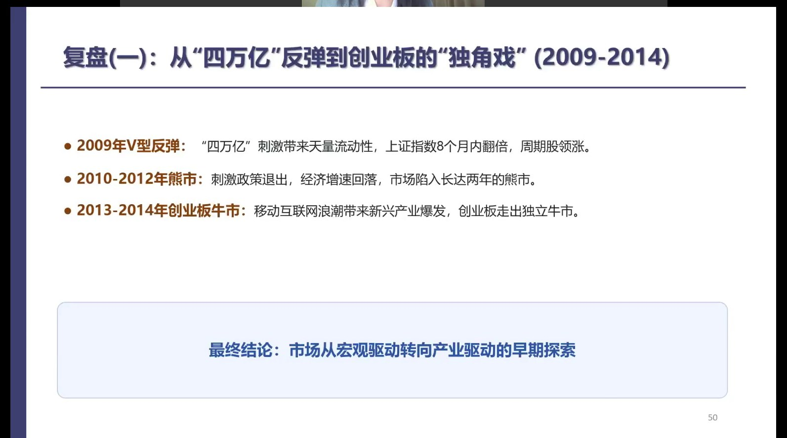
10.1 复盘一：2009-2014年
- 2009年在4万亿刺激下V型反弹、约8个月翻倍；2010-2012年熊市；2013-2014年移动互联网浪潮带来新兴产业爆发，并购重组活跃（2013年前后为"并购元年"），创业板走出独立行情
- 代表性研报：华泰证券"互联网女皇"《重构的三次方，我们迎来最好的时代》；2015年初市场随后因清理伞形配资而终结
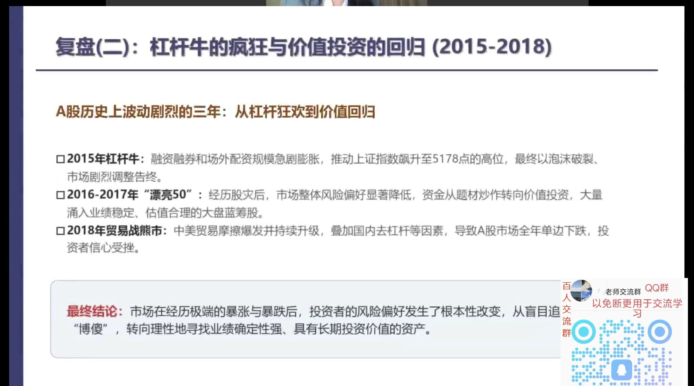
10.2 复盘二：2015-2018年
- 2015年杠杆牛、随后剧烈调整；2016-2017年投资者怕了暴涨暴跌和"假成长"，走向另一极端，偏好高股息蓝筹"漂亮50"；2018年贸易战叠加去杠杆，单边下跌
- 投资者风险偏好根本转变：从盲目追成长、追高收益，转向理性寻找业绩确定性强、具长期价值的股票
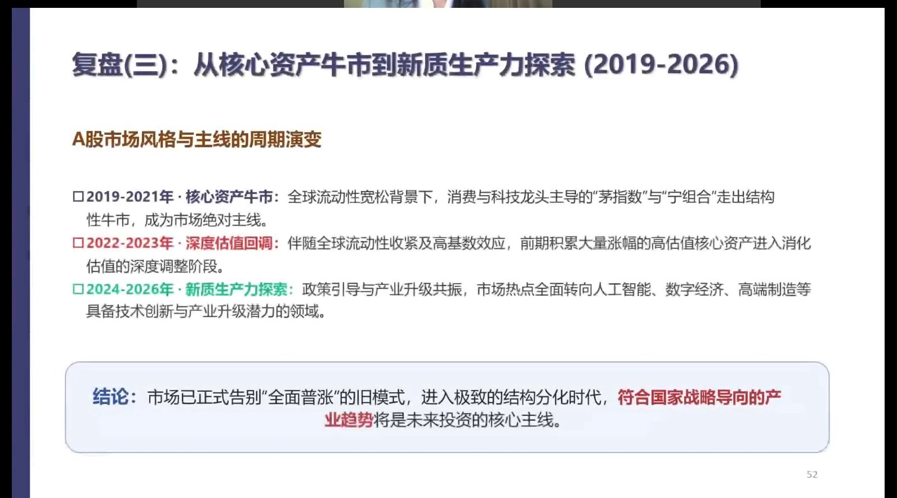
10.3 复盘三：2019-2026年
- 2019-2021年"核心资产牛"（茅指数、宁组合，消费与科技）；2022-2023年全球流动性收紧、高基数下估值消化，是难熬的熊市
- 2024-2026年新质生产力行情。市场正式告别全面普涨旧模式，进入极致结构分化时代，符合国家战略导向的产业趋势成为核心主线
十一、核心驱动力、制度改革与机构化
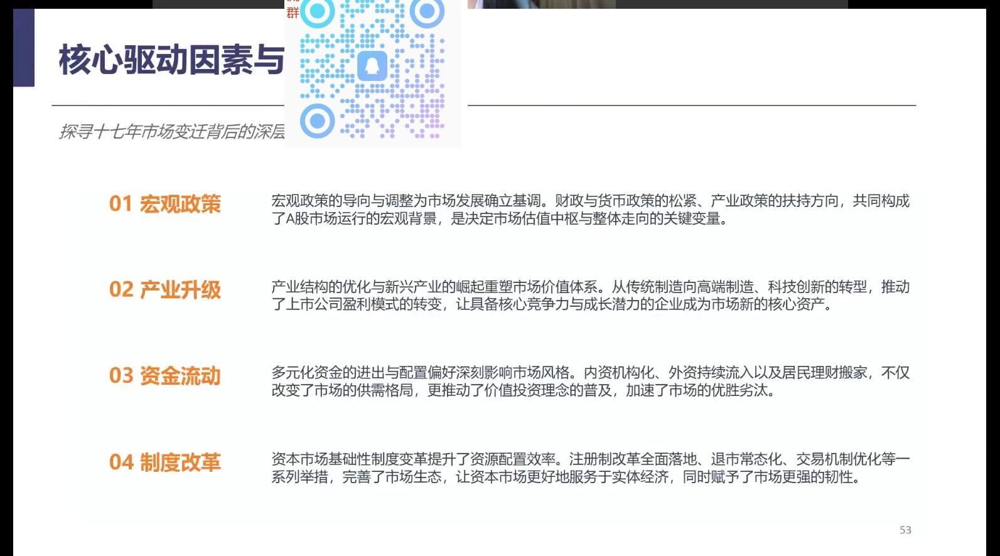
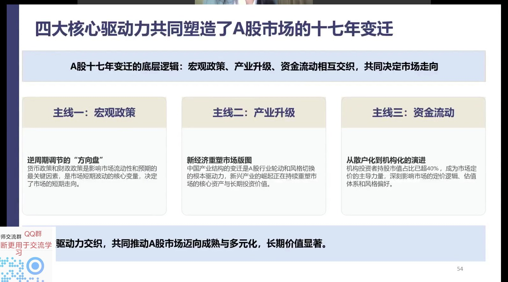
11.1 四大核心驱动力
宏观政策、产业升级（产业政策）、资金流动、制度改革，共同塑造A股17年变迁。对普通投资者而言，A股已是"地狱级难度"——5000多家公司难以通读，且高波动、需择时，不像美股买入持有即可。
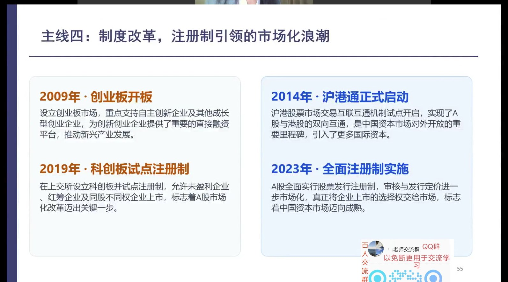
11.2 制度改革主线
- 2009年创业板开板 → 2014年沪港通启动 → 2019年科创板试点注册制 → 2023年全面注册制
- 上市制度沿"审批制→核准制→保荐制→注册制→全面注册制"演进，如同先抱、再扶、最后放手，始终在呵护市场
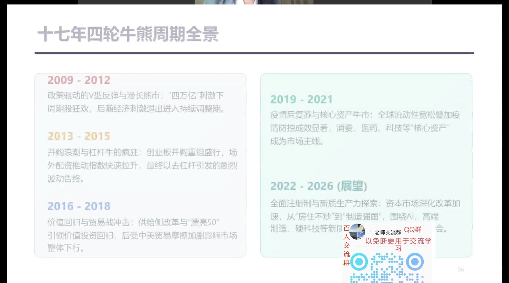
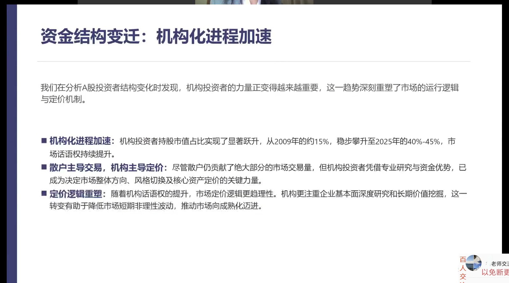
11.3 资金结构机构化
- 机构投资者持股比例从2009年约15%攀升至约40%-45%；散户贡献大量交易，机构主导定价，市场波动性因此下降、定价更趋理性
- 机构更注重基本面深度研究与长期价值；普通投资者也越来越多转向买ETF、买指数
十二、2026机遇挑战与五大见顶信号
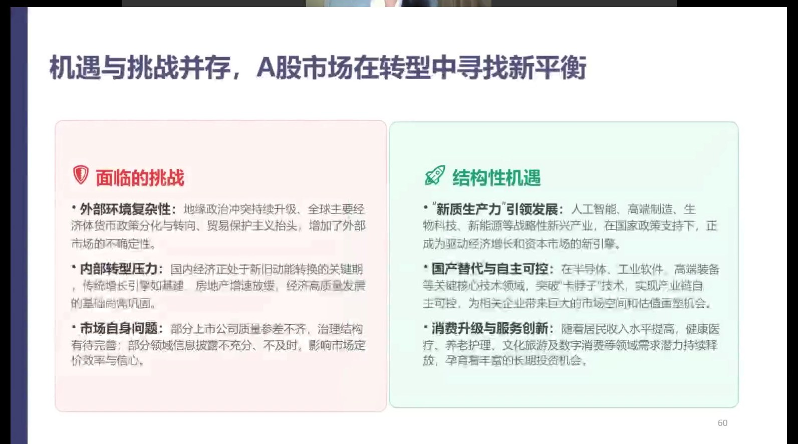
12.1 挑战与机遇
- 挑战：外部地缘冲突、主要经济体货币政策分化；内部处于新旧动能转型关键期，基建、房地产等传统增长放缓，上市公司质量与退市仍需改善
- 机遇：时代主线是新质生产力、高质量发展、国产替代、自主可控，另有消费升级（新消费、健康医疗、养老、文旅、数字消费）；AI、高端制造、生物科技成为主线
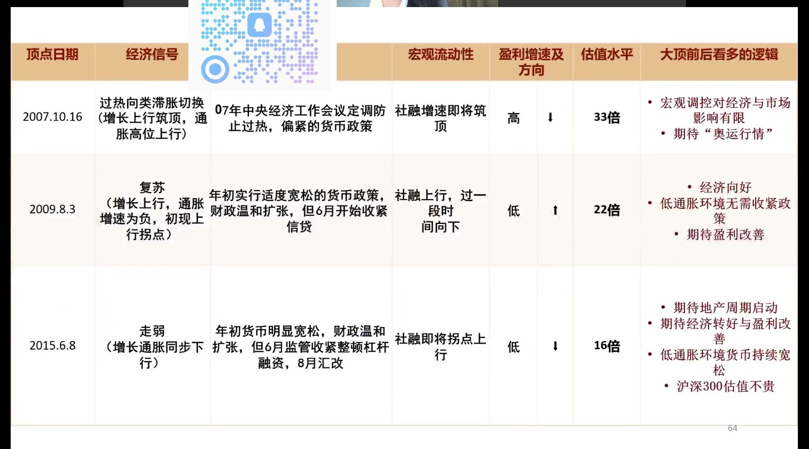
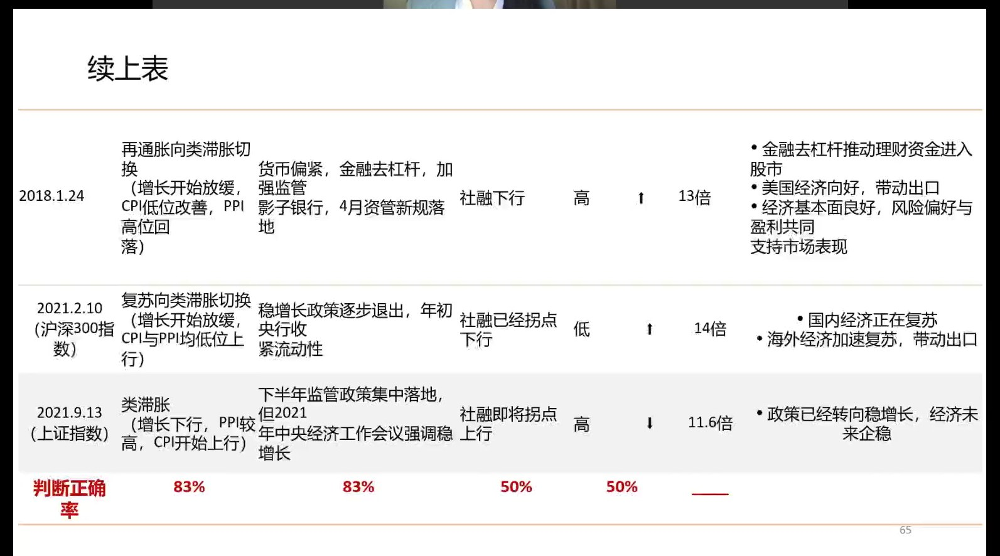
12.2 历史大顶规律与信号准确率
梳理2007、2009、2015、2018、2021年2月、2021年9月等六次顶部，五类信号的判断正确率：
经济信号 5/6（约83%）、政策信号 5/6（约83%）准确率最高；宏观流动性（社融）约50%、盈利增速约50%；估值水平正确率最低、基本无法用于判断顶部。
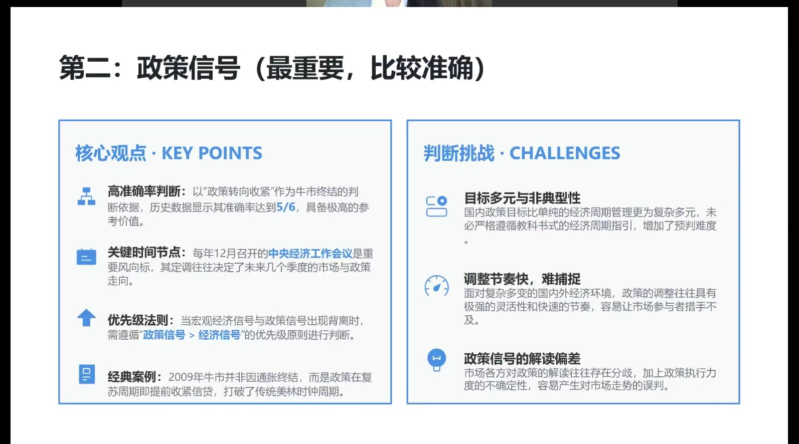
12.3 信号一/二：经济信号与政策信号
- 经济信号（美林投资时钟）：股市在复苏、温和再通胀阶段表现较好，在滞胀、过热、回落阶段承压。陈鹏虽认为美林时钟对中国经济判断不准，但用于判断牛市顶点仍有效（6次对5次）
- 政策信号：重点盯每年12月中央经济工作会议（逐句对比措辞变化）、国九条等，其定调决定未来几个季度走向；政策信号优先级高于经济信号。典型案例：2009年牛市并非因通胀结束，而是政策在复苏周期提前收紧信贷，打破了美林时钟
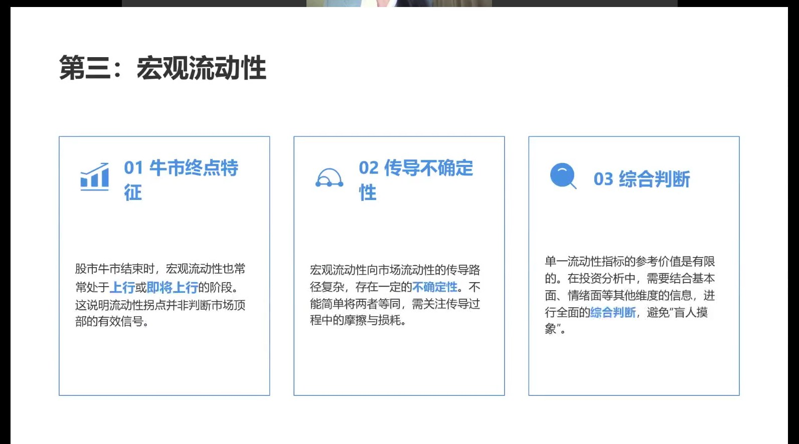
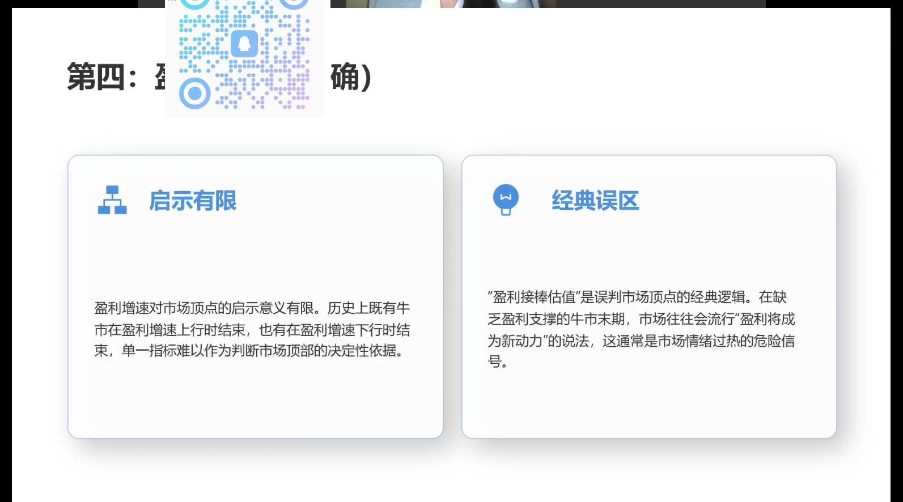
12.4 信号三/四：流动性与盈利
- 宏观流动性：以社融增量判断，准确率约50%；盈利增速：方向判断约50%
- "盈利接棒估值"（估值高了指望盈利增长消化）是误判顶点的经典逻辑——牛市末期市场常流行"盈利将成为新动力"的说法，往往是情绪过热的危险信号（行为金融学中"市场先生"是狂躁抑郁、从不平静的）
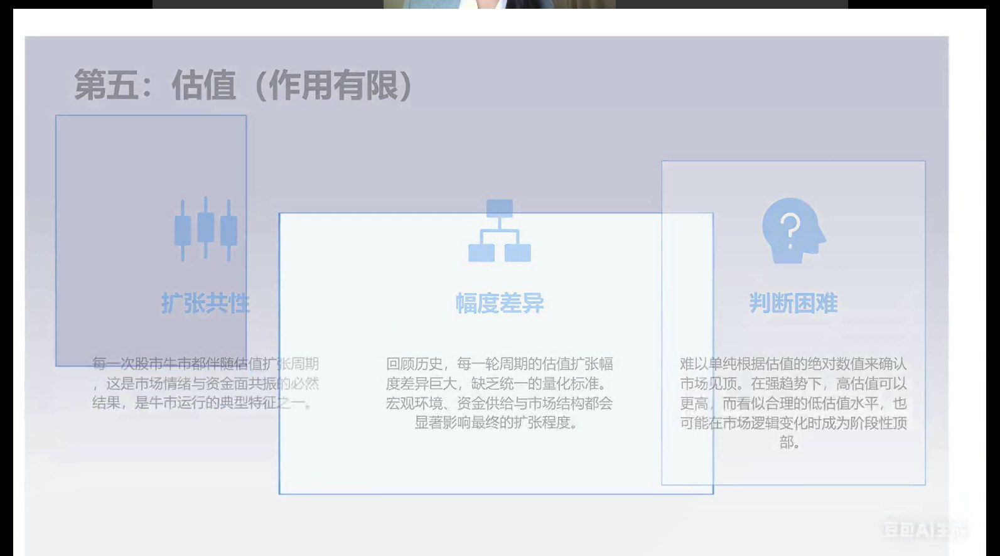
12.5 信号五：估值作用有限
- 历次顶部市盈率差异巨大、缺乏统一中枢：2007年约33倍、2009年约22倍、2015年约16倍、2018年约13倍、2021年2月约14倍、2021年9月约11.6倍——因此判断顶点时不应以估值为参照系
12.6 核心观察：迈向慢牛征途
A股正告别疯牛、走向慢牛：贝塔（波动性）变小；指数化投资（ETF）与精选个股的主动管理并存，价值投资理念深入人心。市场逐渐转向由企业盈利增长驱动、更具可持续性的慢牛，这一转变依托市场结构优化、投资者结构变化与价值投资普及，为长期资金入市提供了良好回报环境。